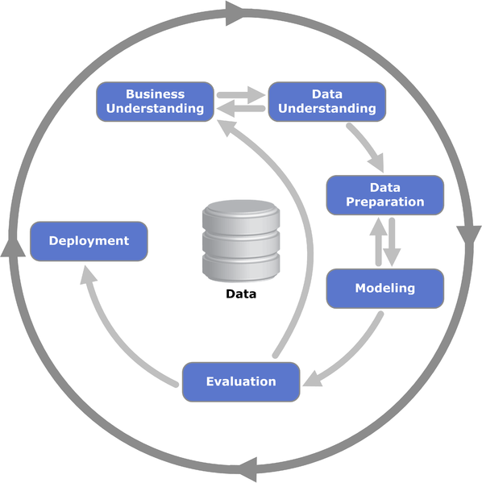

El proceso CRISP-DM
ju. 12 octubre 2023CRISP-DM (Cross-Industry Standard Process for Data Mining) es un marco de trabajo estándar y ampliamente utilizado en la industria para guiar el proceso de desarrollo de proyectos de minería de datos, es un marco flexible que se puede adaptar a las necesidades específicas de cada proyecto y organización. Ayuda a los equipos a estructurar y organizar el proceso de minería de datos, lo que a su vez puede aumentar la eficiencia y la calidad de los resultados.
Consta de 6 pasos 
- Comprensión del Negocio: En esta etapa, se busca comprender los objetivos y requisitos del negocio para el proyecto. Se definen los objetivos de la minería de datos en términos de lo que se espera lograr y cómo esos objetivos se alinean con los objetivos generales del negocio.
- Comprensión de los Datos: En esta etapa, se recopila información sobre los datos disponibles y se realiza un análisis exploratorio para comprender la naturaleza y calidad de los datos. Se trata de identificar problemas de calidad de datos, relaciones entre variables y posibles patrones.
- Preparación de los Datos: En esta etapa, se seleccionan y preparan los datos necesarios para el modelado. Esto puede incluir limpieza de datos, transformaciones y selección de variables relevantes. El objetivo es tener un conjunto de datos listo para el modelado.
- Modelado: En esta etapa, se eligen y se aplican técnicas de modelado, como algoritmos de machine learning o estadísticos, para construir modelos predictivos o descriptivos. Se ajustan los modelos y se evalúa su rendimiento utilizando métricas adecuadas.
- Evaluación: En esta etapa, se evalúan los modelos construidos y se determina su calidad en función de los objetivos del proyecto y las métricas definidas. Esto puede implicar ajustes en los modelos o la selección de un modelo final.
- Despliegue: En esta etapa, los modelos seleccionados se implementan en el entorno operativo del negocio. Esto puede involucrar la integración de los modelos en sistemas existentes o la creación de interfaces para permitir que los usuarios finales accedan a las predicciones.